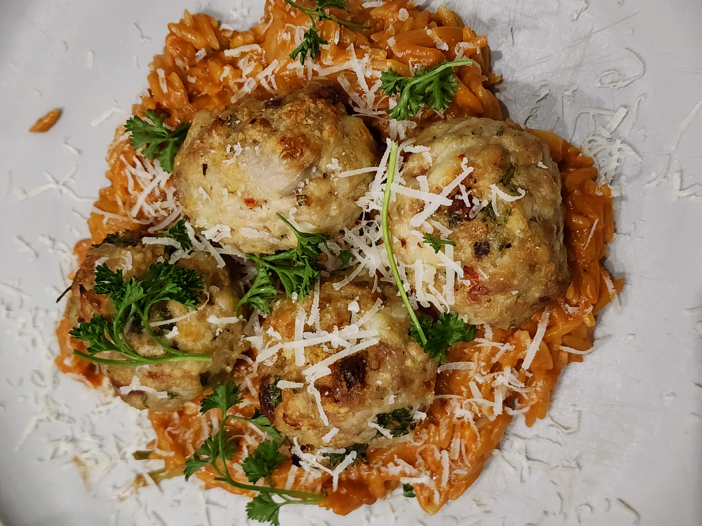

Chicken Meatballs
These chicken meatballs are seasoned with rosemary and served with tomato orzo. A perfect lunch recipe!
Ingredients
For the chicken meatballs:
- 2 oz fresh italian bread, diced
- 1/2 cup warm water
- 2 tbsp butter
- 1 shallot, minced
- 4 garlic cloves, minced
- 1 tsp garlic powder
- 1/4 tsp red pepper flakes
- 1 1/2 lbs ground chicken thigh
- 1/4 cup grated parmesan cheese
- 1/2 cup chopped sun-dried tomatoes
- 2 tbsp fresh chopped parsley
- 2 tsp fresh chopped rosemary
- 1/4 tsp salt
For the orzo:
- 1 tbsp unsalted butter
- 1 tbsp sun-dried tomato olive oil
- 1 sprig of rosemary
- 1 shallot, minced
- 1/4 cup tomato paste
- 1/4 tsp red pepper flakes
- 1/4 cup dry white wine
- 1 cup orzo
- 2 1/4 cups chicken stock
- 1/4 cup heavy cream
- 2 oz fresh spinach
- 1/2 cup grated parmesan cheese
Instructions
- For the meatballs, preheat the oven to 450°F. Prepare a sheet pan with parchment. Place the diced bread in a large bowl and pour the water on top
Let soak, submerged for at least 5 minutes. - Heat a 12" stainless steel pan pver meadium heat. Add the butter and melt it. Add the shallots and garlic. Cook for a minute until fragrant.
Stir in garlic powder and red pepper flakes. Turn off the heat. - Into the bowl with the bread, add the ground chicken, parmesan, sun-dried tomatoes, rosemary, parsley, salt, and shallot mixture. Mix well.
- Form the meatball mixture into 16 2oz balls and place on the prepared sheet pan. Drizzle with olive oil and bake for 25-30 minutes.
- For the orzo, wipe out the skillet and place over medium heat. Add the butter and tomato oil then the rosemary sprig. Let the rosemary crisp on both sides. Remove the rosemary
- Add the shallots and garlic to the butter along with some salt. Cook for 2 minutes and add the tomato paste and red pepper flakes. Stir in white wine then the orzo
Bring the wine to a simmer and cook for 2 minutes. Add chicken stock. Bring to a simmer and reduce to medium-low. Cook for 8 more minutes, stirring often. - Stir in the cream, spinach, and parmesan. Cook for 2 more minutes until the spinach is wilted and the sauce is creamy.
- Serve the meatballs on top of the orzo, garnish with fresh parsley and parmesan and enjoy!